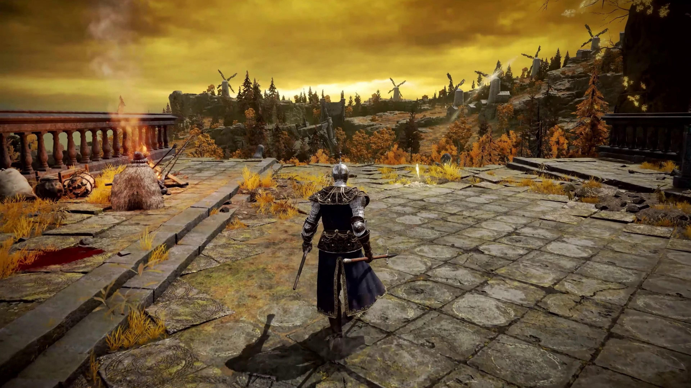
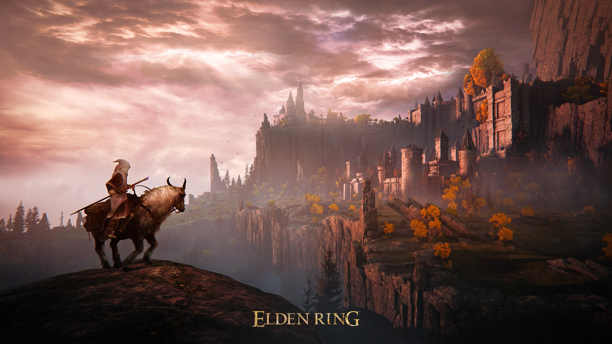

ABOUT
Rise, Tarnished, and be guided by grace to brandish the power of the Elden Ring and become an Elden Lord in the Lands Between.
In the Lands Between ruled by Queen Marika the Eternal, the Elden Ring, the source of the Erdtree, has been shattered.
Marika's offspring, demigods all, claimed the shards of the Elden Ring known as the Great Runes, and the mad taint of their newfound strength triggered a war: The Shattering. A war that meant abandonment by the Greater Will.
And now the guidance of grace will be brought to the Tarnished who were spurned by the grace of gold and exiled from the Lands Between. Ye dead who yet live, your grace long lost, follow the path to the Lands Between beyond the foggy sea to stand before the Elden Ring.
RATINGS
"Elden Ring is a massive iteration on what FromSoftware began with the Souls series, bringing its relentlessly challenging combat to an incredible open world that gives us the freedom to choose our own path."
100/100 - IGN
"Elden Ring challenged me, captivated me, and enchanted me, an unyielding deluge of discovery and artistic vision unbound. Elden Ring represents a truly amazing combination of various game elements that all come together to create something fascinating, special, and unforgettable. Elden Ring isn’t just the best game this year; it’s one of the best games ever made."
100/100 - Game Informer
"In a genre that has become wrought with bloated and over-designed games, Elden Ring is defiantly contrarian in almost every way. Its commitment to design by subtraction and to placing the responsibility of charting a path through its world entirely on the player makes it stand head and shoulders above other open-world titles. Elden Ring takes the shards of what came before and forges them into something that will go down in history as one of the all-time greats: a triumph in design and creativity, and an open-world game that distinguishes itself for what it doesn't do as much as what it does. "
100/100 - GameSpot
SPECIFICATIONS

MINIMUM REQUIREMENTS
OS: Windows 10
Processor: INTEL CORE I5-8400 or AMD RYZEN 3 3300X
Memory: 12 GB RAM
Graphics: NVIDIA GEFORCE GTX 1060 3 GB or AMD RADEON RX 580 4 GB
DirectX: Version 12
Storage: 60 GB available space
Sound Card: Windows Compatible Audio Device
RECOMMENDED REQUIREMENTS
OS: Windows 10/11
Processor: INTEL CORE I7-8700K or AMD RYZEN 5 3600X
Memory: 16 GB RAM
Graphics: NVIDIA GEFORCE GTX 1070 8 GB or AMD RADEON RX VEGA 56 8 GB
DirectX: Version 12
Storage: 60 GB available space
Sound Card: Windows Compatible Audio Device